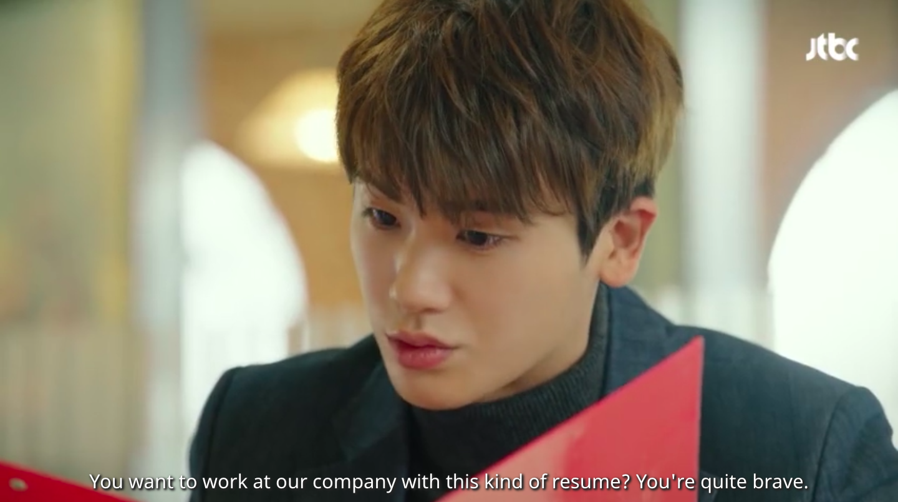
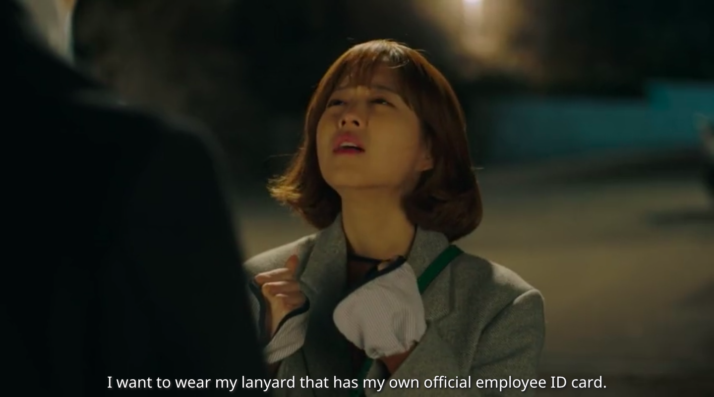
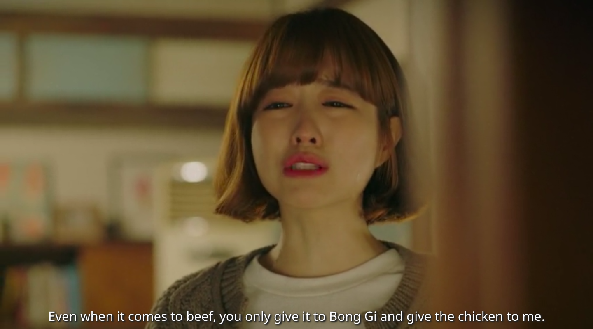
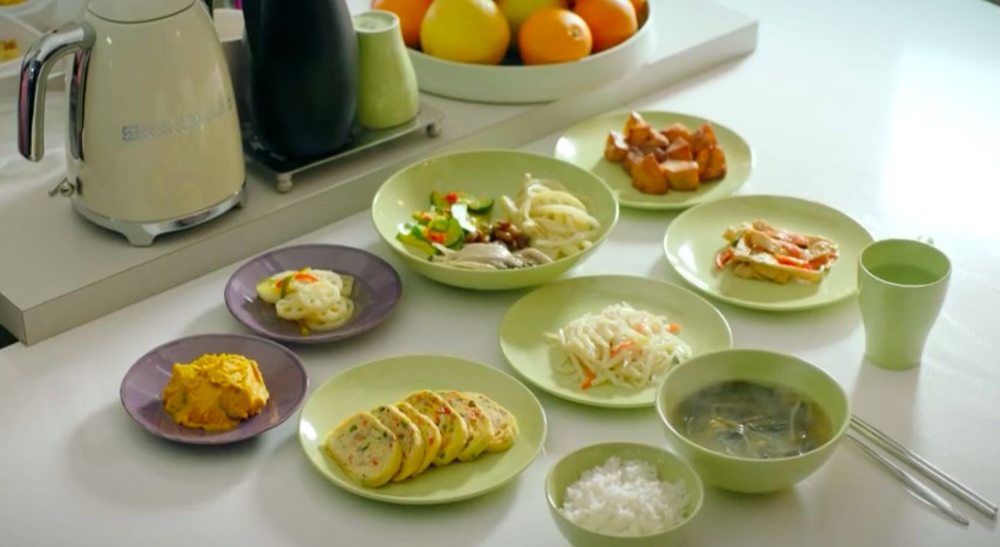
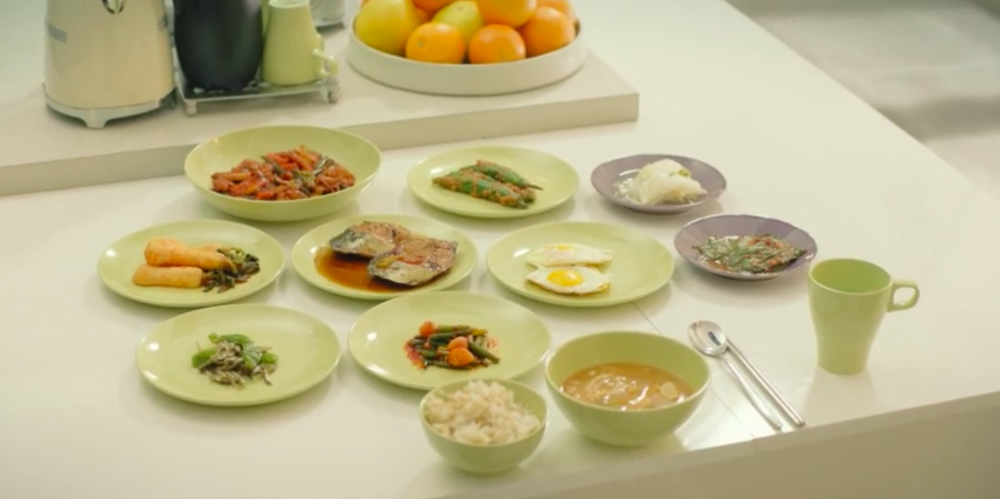
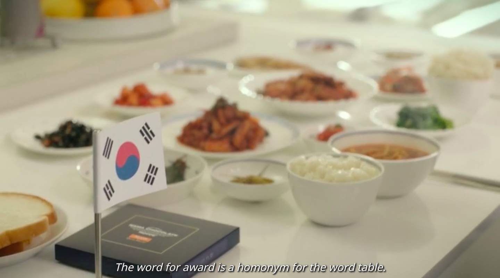
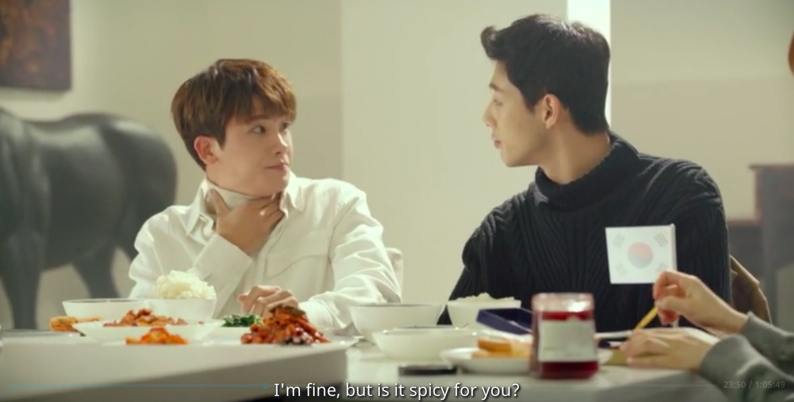
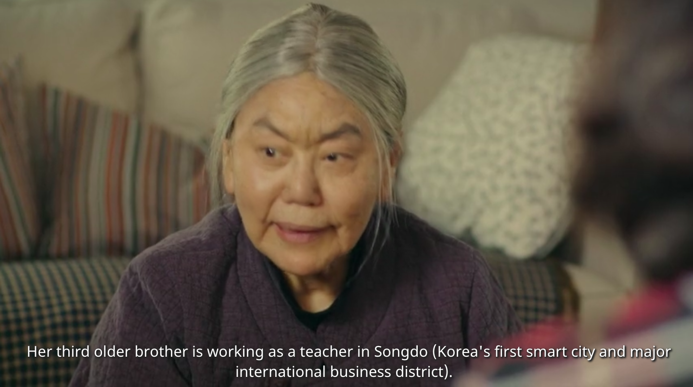

<link rel="stylesheet" href="fullbleed.css">
<link rel="stylesheet" href="https://fonts.googleapis.com/css?family=Roboto">
<head>
  <link rel="icon" href="favicon.ico">
  <title>Strong Woman Bong-soon</title>
</head>
<main class="wrapper">
  <h1 class="center">Strong Woman Bong-soon</h1>

<p>If you want to watch people really aspire and fight for their lives, go watch Itaewon Class. After I finished that show I tried The World of the Married, and felt like each episode was too stressful and tiring for me to get through, then Hospital Playlist, which was the opposite in that it was just a bunch of good people being good friends. Strong Woman Bong-soon seemed like it might strike the perfect balance between tension and levity, but turned out to just be all over the place.</p>
<p>I realized I typically talk about stuff I notice which is only semi-related to how much I actually like the kdrama overall, so to be clear my ranking is: Itaewon Class = Crash Landing on You > Guardian: the Lonely and Great God > Hotel del Luna = Misaeng > Strong Woman Bong-soon. This is comparing apples, oranges, whatever, and I don't dislike any of them, I just like some less. Even as my least favorite, I enjoyed the cartoony style, Do Bong-soon, the walnut bakery, and some cute/sweet moments. I found myself skipping over boring minor characters, though. Similarly, since there was so much more tension and suspense around the main crime mystery than there was around everything else, I felt fine skipping those other scenes.</p>
<p>Maybe the reason I did like Bong-soon was her introduction as someone looking for a job. Having recently gone through this process myself, it resonated. The way she went through a list of questions with the president nicely captured someone who has no idea how to conduct this conversation but read online good interviewee questions to ask and is doing their best with them. I also particularly liked a dream she later professed: to wear a lanyard. </p>
 
 
<p>But her work, and that of the president, lacked urgency. It seemed completely untethered from financial demands, like oh yeah he just runs the company on Mondays and Thursdays but most of the time work is just an excuse to chill with the girl he likes. Compare that to Sae-ro-yi in Itaewon class pouring his whole being into his business. Even when he and those around him are motivated more by relationships than by the business itself, what it leads to is so much hard work and struggle. Bong-soon's work at AINSoft feels so complacent and divorced from the company's success or failure, so the show is less engaging in that way.</p>
<p>What I would've liked is to have her struggle more with becoming a real employee instead of having the president train her in boxing or something. It just doesn't make sense to have a fighting training montage given her already ridiculous strength. So they try for a funny note with not struggling to drag tires around or whatever, which is an interesting idea, but just didn't work for me.</p>
<p>Like first, her character has untouchable strength but employment struggles, so it'd make more sense for her to have to fail and work hard at her job. And second, her relationship with the president was always so rosy, and messing up at his company would've injected a bit of tension.</p>
<p>As for the struggles at work they actually had her go through, meh. Her supervisor was just weird, idk if they thought because it's a video game company everyone should be unhinged and disrespectful or what but that character did not make sense. The actual game she ended up making, idk. Her pitch was for a side scroller with a cute and moving narrative, which to me says indie game more than major studio production.
</p>
 <p>I don't actually know since I literally only play league of legends but my sense is that in general indie games distinguish themselves through more high quality, experimental content, whereas major game studios lean more on quantity and the sort of standard content large teams can create. So it's strange that the game Bong-soon wants to create, an homage to her own journey, personality, love of gaming, whatever, is more like an indie game, even though it's this big company project. Her game's version of success seems like Celeste, Cuphead, Braid, idk, not like some major studio open world game or Fifa 24423. This is not the most important tangent, but I guess they could've just had her work harder to make the game.</p>
<p>As for what they should get rid of! PLEASE PLEASE PLEASE axe the minor characters (in this order): fake guru, high school kids, gangsters. Maybe also police officer's gf, her brother. Maybe I missed some who were so annoying I erased them from my mind. In general I feel like kdramas are great at giving supporting characters emotional depth and their moments to shine. Side characters here were the opposite of that, you could replace them with a plot summary of a,b,c happened and you wouldn't miss any feelings.</p>
<p>But ok, maybe it's just some lighthearted fun, it's not supposed to be that deep? But then it's weird that there's also extremely dark parts featuring the serial kidnapper. The tone bounces way too quickly between silly romantic comedy and traumatic violence against women for the less serious parts to hold attention.</p>
<p>That said, the creepy antagonist was thoroughly creepy. His actor deserves praise. One thing I thought was funny was how in some ways he seemed completely inhuman, like we live in a society but this guy doesn't, but he spoke Korean, which he had to learn from people. Obviously a serial killer speaking English had to learn English too, having to learn Korean just sticks out more to me. </p>
<p>And there were some typical kdrama moments. Apparently she saved him on a swerving bus years ago, before they knew one another. I don't mind that sort of history but could do without it. There's also a lot of food scenes, which I really like. Food and video were just made for one another, I'm happy to watch them smile and eat without saying anything, although I do enjoy the ahhh of satisfactions they give after taking a drink.</p>
<p>Like in Goblin, you can tell the heroine is good because she makes like 50 side dishes. Bong-soon's mom isn't as bad as the aunt in Goblin - she doesn't throw the rice at the heroine - but she definitely mistreats her family. Even if she does love them it feels more like a sort of extended selfishness.</p>
 
<p>I think Korean dramas promote unrealistic standards of beauty by implying this looks typical:</p>

 
 
 
<p>Is that actually what they eat for breakfast? When I get up in the morning I'm proud of myself if I can microwave a bag of frozen broccoli.</p>
<p>Anyways. something Korean dramas do, but this one especially with the cartoony style, is really exxagerated emotions with lighting, music, even special effects.I like it, it's not realism but psychological realism.</p>

 
<p>Something else they do is turtlenecks for the good guys. I'm going to read president Min-hyuk wearing a pixelated blue and pink turtleneck as being a videogamer bisexual Korean. Also he kind of has to be or else the plot point about him implying he's not interested in her because he's gay is even weirder. Although tbh it's just weird regardless idk what they were going for there exactly. But again, his romance with Bong-soon would've been better served by her actually struggling to make a game.</p>
<p>One moment I did like - when the two guys are competing to eat the spicy food and be like haha, this isn't spicy for me at all. I will admit it: I love Korean food, but sometimes (eg 짬뽕- spicy seafood noodle soup) I enjoy it less because it's too spicy for me. I have to eat it slower and intersperse eating and drinking other food.</p>
<p>It seems like it can be a guy thing, similar to how they struggle to open tight jars. Like oh look I can take my spicy food, I challenge you to eat this pepper or whatever. But also it can be about the authenticity of the dish, if you need it watered down and can't handle the "real" version. </p>
<p>And nobody is ever like "I made this walnut pie too sweet? No, you're just weak for not liking that level of sweetness!" or anything like that, but when it comes to spicy flavors people act like it's ok to say whatever, the person consuming the food is just weak. Normalize limited spiciness preferences, people.</p>
 
<p>Actually one very last thing, it seems like instead of being sponsored by Subway, they were sponsored by Songdo! When I was visiting my parents in Korea I stayed in Songdo for a month, so it was nice to see the shoutout. I also visited some places like myeongdong (where the hotel in Hotel del Luna is) but the Songdo mention was cool as sort of my home base in Korea.</p>
 
</main>
